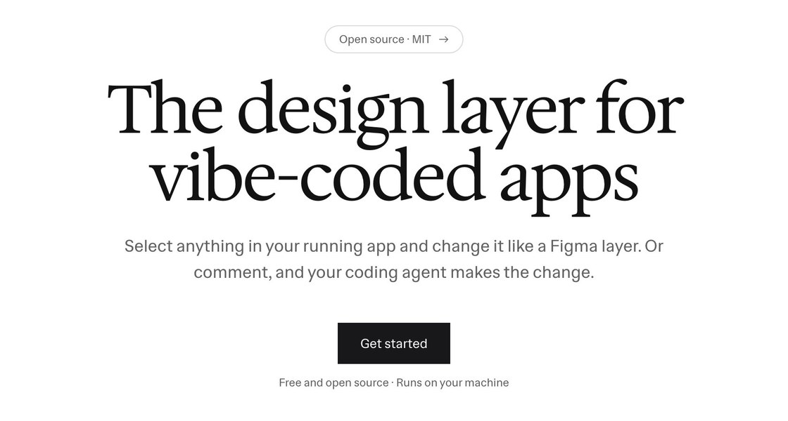
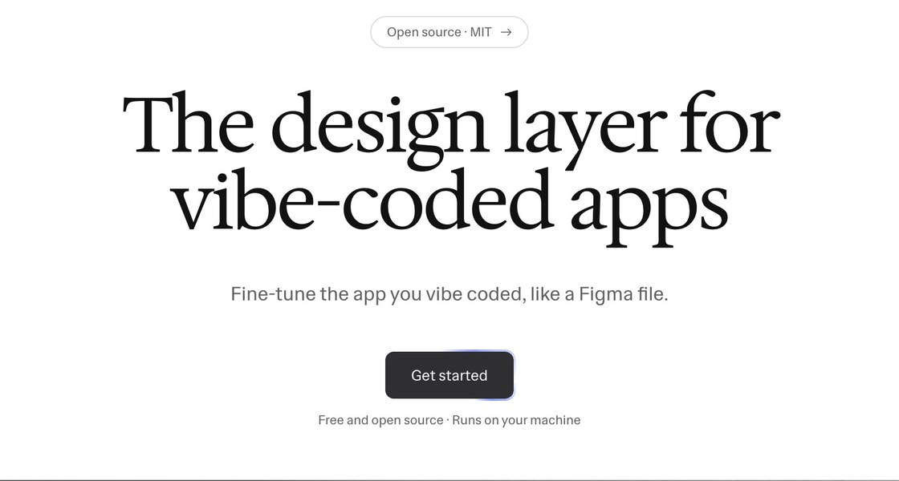

← Round 4: a real design fix · Round 6: the landing page's story, told like Apple →
Round 5: fine-tune what you vibe coded
Your demo script, captured live in Design Layer on the Demo app. You fine-tune the hero the way you would in Figma, hand one idea to your agent, then see every page on the canvas. Option M builds on L. N and O are new, and all three borrow from Cua's launch films. The cuts are silent; music comes later.


Option M · from L
Layers
L's opening: the app lies flat in space, the editor lands on it, and it turns to face you. Then each piece you tune lifts off the page while you work on it: the subtitle as you rewrite it, the hero as its gap opens (a redline counts 24 to 36), and the button as the radius token arcs onto it. Each lift now starts exactly where the piece sits on the page and rises on the same curve as the page's tilt, with its corners and shadow growing in, so nothing jumps. The note stays on the page. At the end, the page shrinks into its frame on the canvas, and the board lies back the way the app did at the start.
- Length
- 35.8 s
- Lead
- 3D layers
- What changed from L
- Smooth lifts with no pops; new story copy; the agent's change and the canvas.
Option N · new
Multiplayer
After Cua's keycaps, a set of tool keys carries this cut: select, text, measure, layout, radius, note, canvas. The keys drift in depth around the opening lines, then form an arc around the editor, Cua-style captions under it. When the note goes out, they re-form as two pointers, one for you and one for your agent, and the agent's own cursor arrives to hover the button it just changed. For the canvas, the keys fly out and the page shrinks into the board.
- Length
- 35 s
- Lead
- Tool keys, named cursors
- Borrowed from
- Cua's launch film: a physical motif that frames the screen and reshapes for each feature, calm captions, and cursors with names.
Option O · new
Canvas
It opens and closes on the canvas. Every page of the app sits on the board; the camera goes into one, and it becomes the live editor. The steps are told in big words that each carry their tool, as in the Select treatment you liked: “Edit.” gets selected, “Measure.” and “Space.” get a redline that counts as the gap opens, “Tokens.” takes the radius, and “Ask.” gets a pin. After the agent's change, the camera pulls back out to the board.
- Length
- 34.8 s
- Lead
- Zoom in, zoom out
- Borrowed from
- Cua's pull-back to a wall of desktops, played in both directions.
What I took from Cua's videos
- A physical motif that belongs to the product: Cua's keycaps drift with depth of field, then form an arc around the screen, pointers, and a grid. Here they are tool keys from the editor (N), and in M the layers themselves play that part. (Cua, launching Cua Spaces)
- The screen stays flat and centered while everything around it changes, with one short caption under it: an icon, a bold lead, the rest in regular weight.
- Cursors with names make the agent a character. Here it is “Agent,” arriving to hover the button it just changed.
- A pull-back for scale: Cua ends on a wall of desktops, and these cuts end on the canvas with every page. The end card mixes a sans with an italic serif, then a pill button and the address.